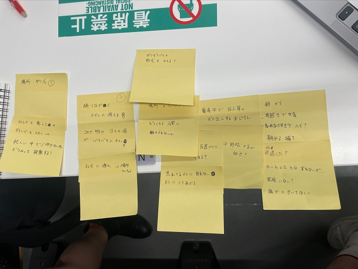
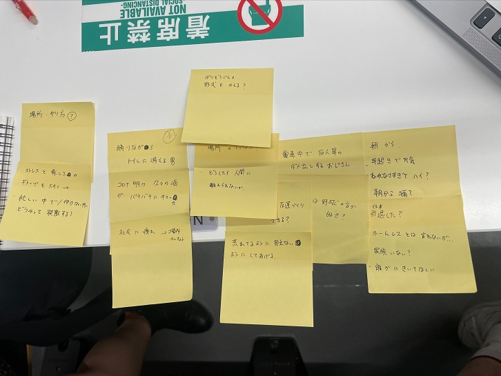

プロトタイピング＆ドキュメンテーション
グループでピックアップした印象に関する説明
ピックアップした人は…
居酒屋で踊りながらトイレに消える男性！
この人はなぜ、人の前では踊らないのに、トイレへ行くときは踊ったのか、
なぜ踊った？トイレに行く時だけ？
様々な疑問について話し合いました。
その行動をした男性になりきり、感じたことや思ったことなどを想像して深く考えました。
POVのスケッチの写真とスケッチ
 

HMWの画像
構想段階の手書きのスケッチの写真
実際に個人で作ったプロトタイプの画像
光の部分は、スマートフォンのライトなので簡単に持ち運ぶことができる。
居酒屋で踊りながらトイレに消える男性だけでなく、たくさんの人にこの照明で疲れをとってもらいたいという願いを込めて作ってみました。
コロナ過ということもあり、今までできたことができなくなることも多くあります。
ストレスをため込みすぎず、程よい息抜きをしてもらいたいです。